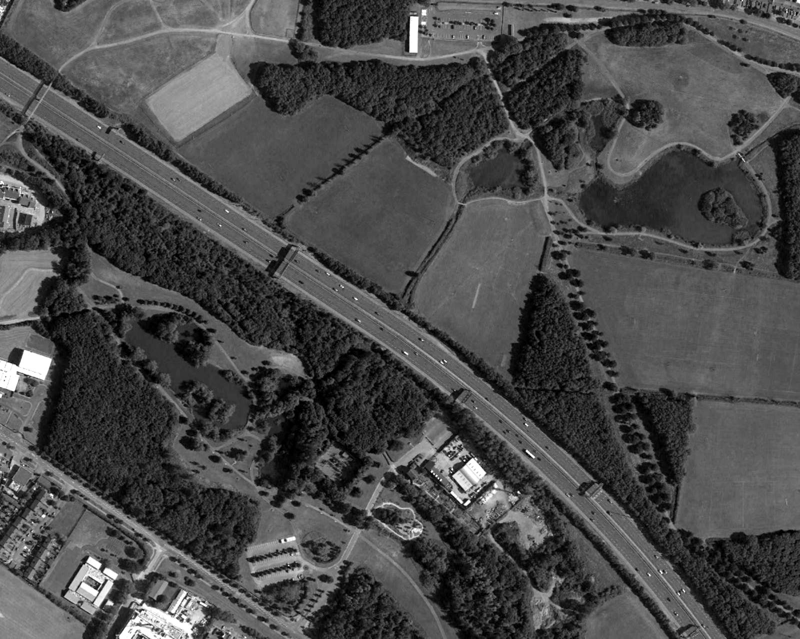

Stop 5 of 16 · Tymon Park
M50 Crossing
Where the motorway sent the river underground.
The M50
The M50 was planned in the 1970s, and building began in the 1980s with this section, from the N7 to the N81, first built as a single-carriageway road.
The state’s purchase of the Tymon estate for the park was probably either a result of the road scheme or part of the same plan. The Poddle was presumably culverted at this point to carry it under the future motorway.
Western Parkway
In 1990 the N3 to N81 section of the M50 opened, including the West Link bridge across the Liffey Valley, and this stretch was upgraded from single carriageway to motorway.
